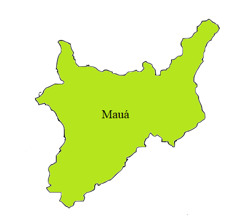

Mauá

Mauá é um município da Região Metropolitana de São Paulo, no estado de São Paulo, no Brasil. Pertence à região do ABC Paulista, na Zona Sudeste da Grande São Paulo, em conformidade com a lei
História da cidade de MauáFundada em 1954, Mauá é um município que pertence à região metropolitana de São Paulo, mais precisamente ao ABC Paulista. A formação do município remete aos séculos XVII e XVIII e está ligada às fazendas do entorno da Capela de Nossa Senhora do Pilar.
Mapa da cidade de Mauá Demografia e Geografia da cidade de Mauá
A paisagem mauaense é dominada pela formação de morros e picos íngremes, típicos da Serra do Mar e por profundos vales alagadiços, hoje na grande maioria aterrados e ocupados de forma desordenada, o que justifica a alta incidência de enchentes. Somente a região do vale do Rio Tamanduateí, no bairro Capuava, é tipicamente plana. Relatos históricos descrevem o local como sendo onde os primeiros bandeirantes, vindos de São Vicente, avistaram o planalto paulista e deram à região o nome de Borda do Campo, por fazer transição entre a Serra do Mar e o Planalto Paulista. O ponto mais alto da cidade é o Morro Pelado, com 867 metros de altitude (o terceiro mais alto da Grande São Paulo), porém, a cidade é em média a mais alta da região metropolitana, devido à carência de áreas planas.
O município de Mauá tem 417.281 habitantes (IBGE/CENSO 2010) e é um dos 39 municípios que integram a Região Metropolitana de São Paulo. Está situado na porção sudoeste do chamado ABC paulista e tem como divisas os municípios de Santo André (Oeste), Ferraz de Vasconcelos (Nordeste), Ribeirão Pires (Leste-Sul) e com São Paulo (Norte). A distância entre o marco zero da cidade, a Praça 1º de Maio, é de 26 km da cidade de São Paulo e 70 km do Porto de Santos. Possui 61 Km² de extensão territorial. Aproximadamente, 13 km² estão em área de proteção de mananciais, junto às porções Sudeste-Nordeste do município.

Economia da cidade de Mauá
Mauá é o 6º município mais populoso da grande região de São Paulo, com 481,7 mil habitantes. O PIB da cidade é de cerca de R$ 17,1 bilhões de reais, sendo que 48,8% do valor adicionado advém dos serviços, na sequência aparecem as participações da indústria (39,3%), da administração pública (11,9%) e da agropecuária (0%).
Com esta estrutura, o PIB per capita de Mauá é de R$ 35,9 mil, valor inferior à média do estado (R$ 51,4 mil), da grande região de São Paulo (R$ 54,9 mil) e da pequena região de São Paulo (R$ 56,6 mil).